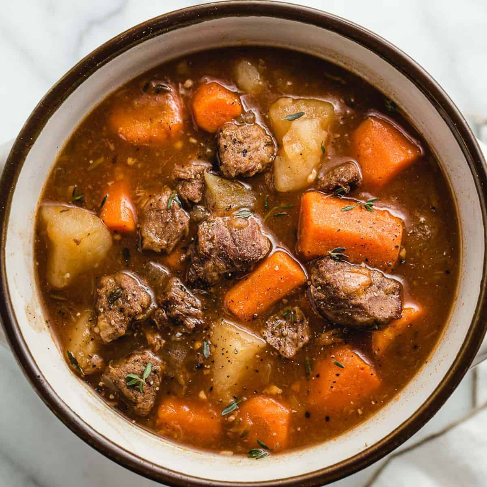

Beef Stew
Home

Description
A warm and hearty Beef Stew recipe, taken from the BBC GoodFood webiste altered slightly.
Will feed a family for weeks if you keep "refreshing" the pot, just like nail soup
Ingredients
- 2 celery sticks
- 1 onion
- 2 big carrots
- Parsnips
- Potatoes
- 5 bay leaves
- Thyme
- Oil
- Butter
- Plain flour
- Tomato puree
- Hendersons relish
- Beef stock
- 850g of beef
Instructions
- Pre-heat oven to 140C
- Find your biggest oven safe pot
- Roughly cut all everything
- Put the carrots, onion, celery, and herbs in the pot with a bit of oil and a good chunk of butter
- Soften for 10 minutes
- Add 1 tbsp of plain flour
- Mix over the heat until folur has gone
- Add Hendersons, tomatoe puree, and beef stock
- Mix
- Add beef and enough water to cover
- Cover, and simmer until the beef is cooked
- Add everything else
- Cook in oven for at least 2hrs 30min